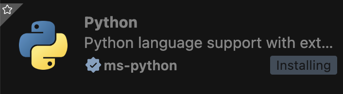
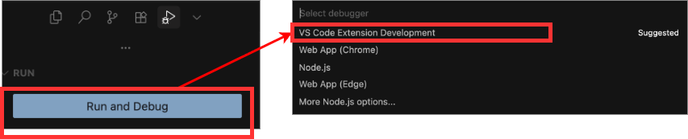
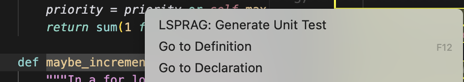
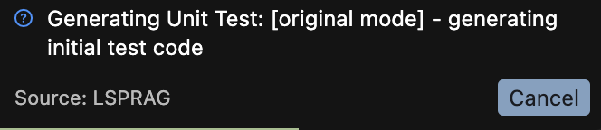

Installation & Setup
Prerequisites
- VS Code: Version 1.95.0 or higher
- Node.js: Version 20 or higher
Installation Steps
- Download Source Code: Use
git cloneor download the ZIP file directly. - Setup Project:
cd LSPRAG npm install --force npm run compile - Install Language Server Extensions:
- Python: Install "Pylance" and "Python" extensions
- Java: Install "Oracle Java Extension Pack"
- Go: Install "Go" extension and enable semantic tokens in settings
Language Server Integration in VS Code. - Activate Extension:
- Navigate to
src/extension.ts - Click "Run and Debug" and select "VS Code Extension Development"
Activating the extension in VS Code. - Navigate to
- Configure LLM Settings: In the newly opened editor, configure your LLM provider in
settings.json:{ "LSPRAG": { "provider": "deepseek", "model": "deepseek-chat", "deepseekApiKey": "your-api-key", "openaiApiKey": "your-openai-key", "localLLMUrl": "http://localhost:11434", "savePath": "lsprag-tests", "promptType": "detailed", "generationType": "original", "maxRound": 3 } }
Usage
Basic Workflow
- Open Your Project: Navigate to your target project in the new VS Code editor.
- Generate Tests:
- Navigate to any function or method
- Right-click within the function definition
- Select "LSPRAG: Generate Unit Test" from the context menu
Generate Unit Test command in context menu.Waiting for test generation to complete. - Review & Deploy: Generated tests will appear with accept/reject options.
 Final generated unit test result.
Final generated unit test result.
Command Palette Commands
LSPRAG: Generate Unit Test- Generate tests for selected functionLSPRAG: Show Current Settings- Display current configurationLSPRAG: Test LLM- Test LLM connectivity and configuration
System Architecture
Core Modules
1. Extension Entry Point (extension.ts)
Main activation point for the VS Code extension. Registers commands, initializes configuration, and orchestrates the test generation workflow.
2. Generation Pipeline (generate.ts)
Purpose: Orchestrates the entire test generation process.
collectInfo()- Gathers context including dependencies, references, and source codegenerateUnitTestForSelectedRange()- Main entry for generating tests from cursor position- Integrates with LSP to extract semantic information
- Delegates to strategy generators for actual test creation
3. Fix & Refinement (fix.ts)
Purpose: Iteratively refines generated tests using LSP diagnostics.
- Collects diagnostics from generated test code
- Groups and prioritizes errors
- Invokes LLM with diagnostic context to fix issues
- Supports multiple refinement rounds (configurable via
maxRound)
4. LLM Integration (invokeLLM.ts)
Purpose: Unified interface for multiple LLM providers.
- Supports OpenAI, DeepSeek, and Ollama
- Handles API calls, token counting, and error handling
- Logs all interactions for experiment reproducibility
LSP Integration (src/lsp/)
The LSP module provides language-agnostic semantic analysis capabilities:
- definition.ts - Resolves symbol definitions, constructs dependency graphs
- reference.ts - Finds all references to symbols for usage context
- diagnostic.ts - Retrieves and processes compiler/linter diagnostics
- token.ts - Extracts semantic tokens and use-def chains
- symbol.ts - Queries document symbols (functions, classes, methods)
- tree.ts - Navigates symbol hierarchy and parent-child relationships
- vscodeRequestManager.ts - Manages LSP requests to VS Code language servers
Control Flow Analysis (src/cfg/)
Builds control flow graphs to identify key execution paths:
- builder.ts - Abstract CFG builder interface
- builderFactory.ts - Factory for language-specific CFG builders
- python.ts, java.ts, golang.ts - Language-specific CFG construction
- path.ts - Extracts and analyzes CFG paths for coverage
- languageAgnostic.ts - Fallback CFG builder using generic AST parsing
Generation Strategies (src/strategy/)
Multiple test generation strategies for different use cases:
- naive.ts - Basic generation without semantic analysis (baseline)
- cfg.ts - CFG-guided generation for path coverage
- agent.ts - Multi-step reasoning with iterative refinement
- symPrompt.ts - Symbolic execution-inspired prompting
- experimental.ts - Latest experimental features
- factory.ts - Strategy pattern factory for generator selection
Prompt Management (src/prompts/)
Constructs and manages prompts for LLM invocation:
- promptBuilder.ts - Assembles prompts from context and templates
- template.ts - Prompt templates for generation and fixing
- languageTemplateManager.ts - Language-specific prompt customization
- ChatMessage.ts - Message format abstraction for different LLM APIs
Workflow Diagram
End-to-End Test Generation Flow
- User Trigger: User selects a function and invokes "Generate Unit Test"
- Symbol Resolution: LSP queries document symbols to locate the target function
- Context Collection:
- Extract semantic tokens from function body
- Resolve definitions via LSP "go to definition"
- Find references via LSP "find references"
- Build dependency graph of related symbols
- CFG Analysis: Build control flow graph and extract key paths
- Prompt Construction: Assemble context into structured prompt using templates
- LLM Invocation: Send prompt to configured LLM provider
- Code Parsing: Extract test code from LLM response
- Diagnostic Collection: Write test to temporary file and collect LSP diagnostics
- Iterative Fixing: If errors exist, invoke LLM with diagnostic context to fix (repeat up to
maxRoundtimes) - User Review: Present final test code with diff view for acceptance
- Deployment: Save accepted test to configured location
Configuration Options
Core Settings
| Setting | Type | Default | Description |
|---|---|---|---|
provider |
string | deepseek | LLM provider (deepseek, openai, ollama) |
model |
string | deepseek-chat | Model name for generation |
generationType |
string | original | Strategy: naive, original, agent, cfg, experimental |
promptType |
string | basic | Prompt style: basic, detailed, concise |
maxRound |
number | 3 | Maximum refinement rounds |
savePath |
string | lsprag-tests | Output directory for generated tests |